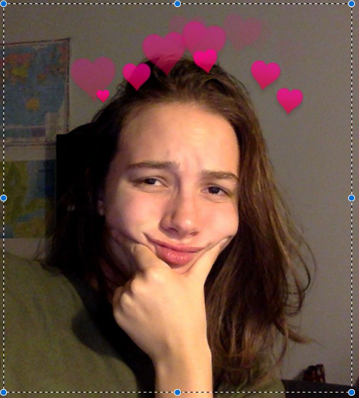

| Main | About Me | Lyrics |

About Me
Главный герой, подросток Наруто Удзумаки, является носителем девятихвостого демона-лиса, запечатанного в его теле. За двенадцать лет до начала событий, излагаемых в манге, демон-лис напал на Деревню, скрытую в листве, родную деревню Наруто. Ради спасения Конохи Четвёртый Хокагэ, глава селения, пожертвовал жизнью, чтобы запечатать дух зверя внутри своего новорождённого сына Наруто. Хокагэ желал, чтобы люди считали Наруто героем, поскольку отныне он сдерживал мощь девятихвостого лиса, однако население деревни восприняло Наруто как демона во плоти и возненавидело его. Поскольку упоминать об атаке лиса было запрещено, Наруто узнал о своей необычности лишь случайно, годы спустя.
Манга делится на две части. В начале первой части Наруто с большим трудом завершает обучение и получает звание гэнина — начинающего ниндзя. Он и двое его одноклассников, Саскэ Утиха и Сакура Харуно, образуют команду под началом опытного сэнсэя Какаси Хатакэ. По мере развития сюжета Наруто находит новых друзей среди жителей деревни и овладевает новыми способностями, считая их необходимыми для того, чтобы в будущем исполнить свою мечту — стать Хокагэ.
Мои Любимые Занятия:3
- спать
- кушац
- смотреть Гарри Поттера
- страдать
© 2018